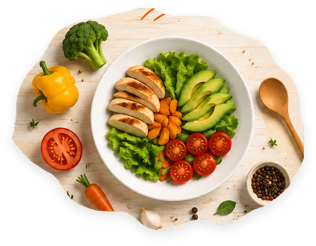

No todo va junto
Algunas frutas liberan etileno y aceleran la maduración de otras.
Separá: banana, manzana, palta y tomate de hojas verdes, brócoli, zanahoria y pepino.
Guardá tus alimentos, llevá un control simple de sus vencimientos y recibí ideas para aprovecharlos antes de que sea tarde.

Llevá el control de lo que tenés en casa. Si ya existe un alimento igual, FreshGuard te lo avisará.
Estos son los alimentos que conviene consumir primero para evitar que terminen en la basura.
Tocá una categoría para ver únicamente los alimentos que cargaste vos.
Reglas sencillas para cuidar tus alimentos, saber si aún son seguros y usar mejor el freezer.
Algunas frutas liberan etileno y aceleran la maduración de otras.
Pan, carnes, frutas para licuados, queso rallado y comidas cocidas se congelan muy bien. Dividí en porciones y rotulá fecha.
Antes de consumir, revisá olor, color, textura y envase. Si hay moho, olor fuerte, burbujas inesperadas o lata hinchada, descartalo.
Dejá adelante lo que vence primero, guardá lo recién comprado atrás y no llenes demasiado la heladera: el aire frío necesita circular.
Reglas sencillas para cuidar tus alimentos, saber si aún son seguros y usar mejor tu freezer.
Algunas frutas liberan etileno y aceleran la maduración de otras.
Pan, carnes, frutas para licuados, queso rallado y comidas cocidas se congelan muy bien. Dividí en porciones y rotulá fecha.
Antes de consumir, revisá olor, color, textura y envase. Si hay moho, olor fuerte, burbujas inesperadas o lata hinchada, descartalo.
Dejá adelante lo que vence primero, guardá lo recién comprado atrás y no llenes demasiado la heladera: el aire frío necesita circular.
Elegí un momento del día y encontrá opciones rápidas para aprovechar lo que ya tenés.